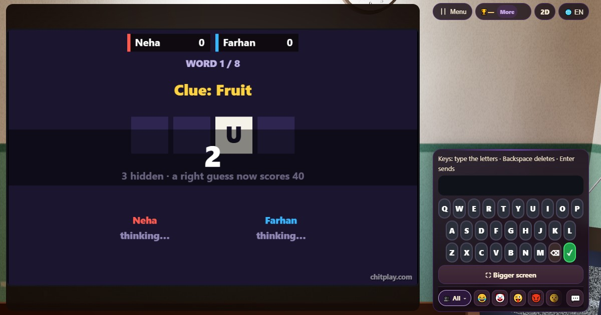

Kelime Tahmini (Word Guess)
- 👥 1–4 oyuncu
- Kâğıt kalem oyunları
- 🆓
Türkçe rehber
Gizli bir kelime, bir ipucu ve her seferinde bir harf. Erken bil, çok puan al; ama tek hakkın var.
English name: Word Guess

Nasıl oynanır
- Bir ipucu (Fruit ya da Sport gibi) ve kelimeyi boş kareler olarak görürsün; bir harf açıktır.
- Her bir buçuk saniyede bir harf daha açılır. Son harf hiç açılmaz, yani her zaman tahmin etmen gerekir.
- Kelimenin tamamını harf tuş takımına (ya da klavyene) yaz ve ✓ tuşuna bas. Her kelime için tek tahmin hakkın var.
- Her telefon kendi oyuncusunun süresini ölçer ve arkadaşların telefonlarına yalnızca açılmış harfler gider, kelime asla gitmez.
Puanlama
Doğru tahmin 10 puan, gönderdiğin anda gizli kalan her harf için de 10 puan daha getirir. Arkadaşlarla her kelimedeki en hızlı doğru tahmin 10 puan daha alır. Yanlış tahmin o kelimeden puan getirmez. 80, 160, 240 ve 320 puanda madalya.
Kim kazanır
Sekiz kelimenin sonunda en çok puanı olan kazanır.
Sık sorulan sorular
Kelimeler hangi dilde?
Kelimeler meyveler, hayvanlar ve evdeki eşyalar gibi günlük İngilizce kelimelerdir; yani oyun İngilizce kelime çalışması için de iyidir.
Yanlış tahmin edersem ne olur?
O kelimeden puan alamazsın ve sıradakini beklersin. Her kelimede tek hak var, bu yüzden çok erken tahmin etmek risklidir.
Nasıl oynanır
- Misafir olarak: Üyelik ve giriş yok. Bir ad seç ve hemen oyna.
- Bilgisayara karşı: Kimse yoksa bilgisayar oyuncuları boş yerleri doldurur. Kolay, normal veya zor.
- Online: Dünyanın her yerinden oyuncularla açık bir masaya otur.
- Yakındaki arkadaşlarla: Oyunu bir telefonda başlat, kodu veya QR kodu paylaş. Arkadaşların kendi telefonlarından katılır.
- Tek telefonda: Telefonu sırayla elden ele verin: bütün aile için tek cihaz yeter.
Diğer diller
- हिन्दी: वर्ड गेस
- Hinglish: Word Guess
- Español: Adivina la palabra
- Português: Adivinhe a palavra
- Français: Devine le mot
- Deutsch: Wort raten
- Bahasa Indonesia: Tebak Kata
- Italiano: Indovina la parola
- 日本語: 単語あてゲーム
- 한국어: 단어 맞히기
- 中文: 猜单词
- Русский: Угадай слово
- اردو: ورڈ گیس
- नेपाली: वर्ड गेस
- বাংলা: ওয়ার্ড গেস
- English: Word Guess · Tüm kurallar (İngilizce)
Oyun fikirleri
Tüm oyunlar


ChitPlay'de gerçek para, bahis veya ödül yoktur. Puanların değeri yoktur.